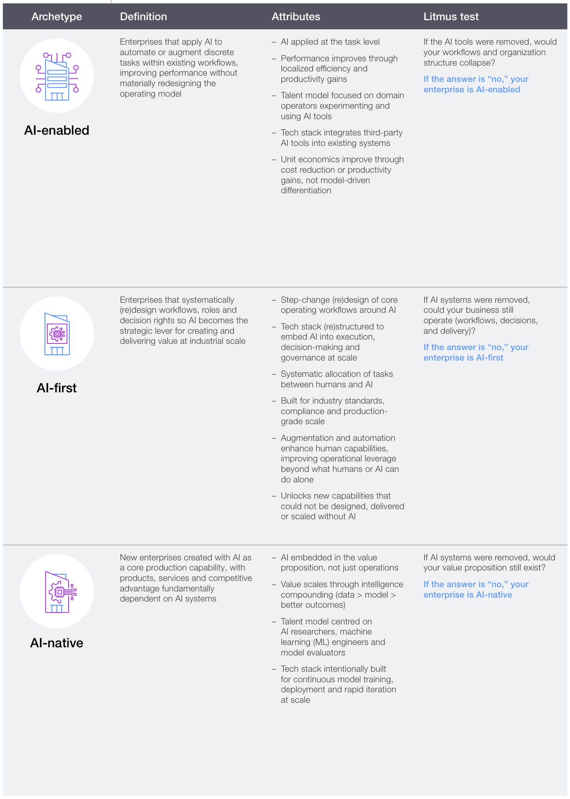
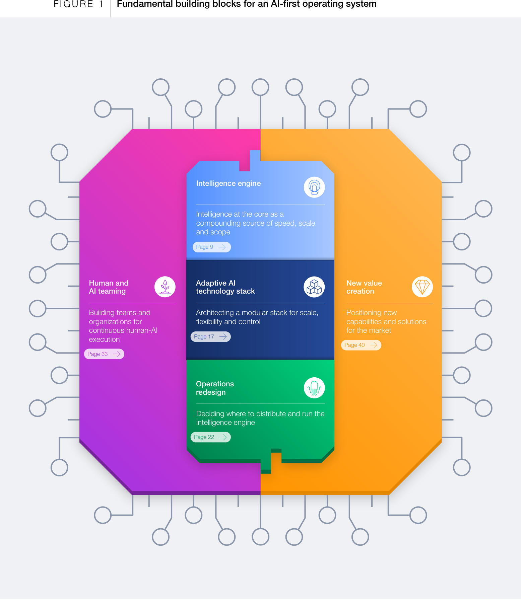
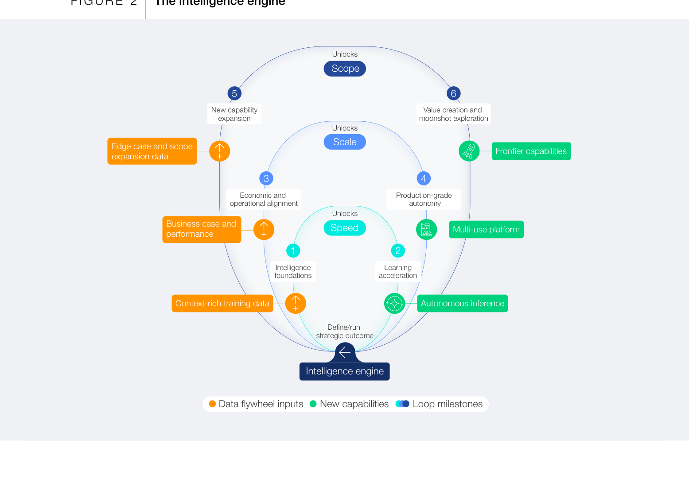
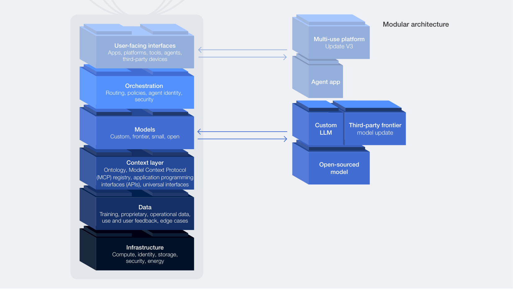

세계경제포럼이 Kearney와 함께 최전선 기업 50여 곳을 분석해 'AI 우선 운영체계' 청사진을 냈습니다.
기업을 AI를 얹은 AI-enabled, 운영을 재설계한 AI-first, AI가 제품인 AI-native로 나눴습니다.
다섯 개 빌딩블록이 이들을 가릅니다. 다만 84%의 기업은 아직 AI에 맞춰 일을 재설계하지 않았습니다.
당신 회사는 AI를 쓰고 있습니까, 아니면 AI 위에서 돌아가고 있습니까?
그 차이가 앞으로의 격차를 만듭니다.
대부분의 회사는 AI를 도구로 씁니다. 기존 업무 흐름 위에 챗봇과 코파일럿을 얹습니다. 성과는 오릅니다. 다만 가장자리에서만 오릅니다. WEF는 이런 방식이 기술의 잠재력을 다 끌어내지 못한다고 봅니다.
이 보고서는 다른 회사들을 이야기합니다. AI를 도구로 얹는 대신, 회사의 운영 논리 자체를 AI 위에 다시 지은 기업입니다. WEF는 이들을 'AI 우선(AI-first)' 기업이라 부릅니다. 이 글은 그 청사진을 우리 조직 진단에 쓰는 법을 다룹니다. 지금 우리가 도구를 얹는 쪽인지, 체계를 다시 짓는 쪽인지 물어야 합니다.
이 청사진은 감이 아니라 관찰에서 나왔습니다. WEF는 AI 글로벌 얼라이언스 산하 'AI 우선 기업' 워크스트림을 꾸렸습니다. 최전선 기업과 전문가 50여 곳을 모으고, 150명 넘는 임원을 인터뷰했습니다. 배경에는 뚜렷한 격차가 있습니다. 2025년 전 세계 AI 투자는 2,500억 달러를 넘었지만, AI가 변혁적 효과를 낸다고 답한 기업은 25%뿐이었습니다. 무엇보다 84%의 기업은 아직 AI에 맞춰 일하는 방식을 재설계하지 않았습니다.
첫째, 회사는 세 유형으로 갈립니다. WEF는 기업을 세 아키타입으로 나눕니다. AI-enabled는 기존 업무에 AI를 얹어 부분 효율을 얻는 회사입니다. AI-first는 워크플로와 역할, 의사결정 권한까지 AI를 중심으로 다시 설계한 회사입니다. AI-native는 AI 자체가 제품이자 경쟁력인 회사입니다. 구분법은 단순합니다. AI를 걷어내면 우리 조직이 무너지는가. 답이 아니오라면 아직 AI-enabled에 머문 것입니다.

둘째, 다섯 개 빌딩블록이 그 차이를 만듭니다. AI-first 기업이 공유하는 뼈대는 다섯 개입니다. 인텔리전스 엔진, 적응형 기술 스택, 운영 재설계, 인간-AI 협업, 새 가치창출입니다. 지능을 중심에 두고, 스택을 유연하게 갈아 끼우고, 업무를 통째로 다시 잇는 구조입니다. 이 다섯은 순서대로 밟는 로드맵이 아닙니다. 서로를 강화하는 하나의 시스템으로 맞물려 돌아갑니다.

셋째, 핵심은 복리로 도는 인텔리전스 엔진입니다. 다섯 블록의 중심에 인텔리전스 엔진이 있습니다. 쓸수록 똑똑해지는 데이터 플라이휠입니다. 세 개의 고리가 함께 돕니다. 속도 고리는 실험과 학습을 앞당기고, 규모 고리는 그 지능을 여러 업무로 넓히고, 범위 고리는 새 영역과 시장으로 확장합니다. 효과는 사례로 드러납니다. 상업용 보험 워크플로는 28일에서 2.8시간으로 줄었고, 어떤 기업은 연 1억 달러 매출에 몇 년이 아니라 몇 달 만에 도달했습니다.

넷째, 기술 스택은 모듈형이고, 통제층은 직접 쥡니다. AI-first 기업은 기술 스택을 모듈로 짭니다. 모델과 도구가 바뀌어도 시스템 전체를 다시 짓지 않고 부품만 갈아 끼웁니다. 중요한 것은 통제층을 남에게 넘기지 않는 것입니다. 어떤 모델에 일을 보낼지 정하는 오케스트레이션, 데이터가 모델과 만나는 컨텍스트 계층을 회사가 직접 소유합니다. 그래야 벤더가 바뀌어도 서비스 품질과 데이터 흐름이 흔들리지 않습니다.

지금 쓰는 AI 도구를 전부 걷어냈다고 가정합니다. 우리 워크플로와 조직 구조가 그대로 굴러가면 AI-enabled, 무너지면 AI-first입니다. 이 한 질문이 우리가 도구를 얹는 단계인지 체계를 바꾸는 단계인지 가릅니다. (이번 주)
가장 병목이 심한 업무 하나를 골라, AI를 얹는 대신 그 흐름을 처음부터 다시 짭니다. 84%의 기업이 아직 못 한 일입니다. 여기서 나온 학습이 다른 업무 재설계의 본보기가 됩니다. (1개월)
어떤 모델에 일을 보낼지 정하는 오케스트레이션과, 사내 데이터가 모델과 만나는 컨텍스트 계층은 직접 소유합니다. 특정 벤더에 이 층을 맡기면, 나중에 모델을 바꿀 때 워크플로를 통째로 다시 지어야 합니다. (분기 내)
표본이 최전선 기업입니다. 이 청사진은 이미 앞서 달리는 50여 곳을 관찰해 뽑았습니다(세계경제포럼, 2026). 성공한 사례에서 공통점을 추린 만큼 생존 편향이 있습니다. 이 패턴을 따른다고 같은 결과가 나온다는 보장은 없습니다.
대기업 사례에 치우칩니다. 인용된 사례는 대체로 규모 있는 기업이나 자본이 두터운 스타트업입니다. 통제층 소유, 모듈형 스택 구축에는 상당한 인력과 예산이 듭니다. 작은 조직에는 그대로 옮기기 어려운 조언도 섞여 있습니다.
정의가 규범적입니다. AI-first가 옳고 AI-enabled는 뒤처졌다는 틀 자체가 보고서의 관점입니다(세계경제포럼, 2026). 회사의 처지에 따라 도구로 얹는 방식이 더 합리적일 수 있습니다. 이 프레임은 진단 도구로 쓰되, 모든 회사가 AI-native를 향해야 한다는 명령으로 읽지는 말아야 합니다.
AI를 도구로 얹는 회사와 운영체계로 다시 짓는 회사의 격차가 벌어지고 있습니다. 먼저 우리가 어느 쪽인지 물어야 합니다.
AI-enabled / AI-first / AI-native: 각각 AI를 기존 업무에 얹은 회사, 운영을 AI 중심으로 재설계한 회사, AI 자체가 제품인 회사입니다.
인텔리전스 엔진: 쓸수록 똑똑해지는 데이터 플라이휠입니다. AI-first 운영체계의 중심에 놓입니다.
오케스트레이션: 여러 모델과 도구에 일을 어떻게 배분하고 조율할지 정하는 제어 계층입니다.
컨텍스트 계층: 사내 데이터와 시스템을 모델에 연결하는 계층입니다. MCP 같은 표준으로 여러 도구를 공통 규격으로 잇습니다.
모듈형 스택: 모델, 데이터, 도구를 독립된 부품으로 짜, 하나를 바꿔도 전체를 다시 짓지 않아도 되게 한 구조입니다.
- World Economic Forum, & Kearney. (2026, June). The AI-First Operating System: A Blueprint for Operating and Business Model Innovation [White paper]. World Economic Forum. (원문 보기 ↗)